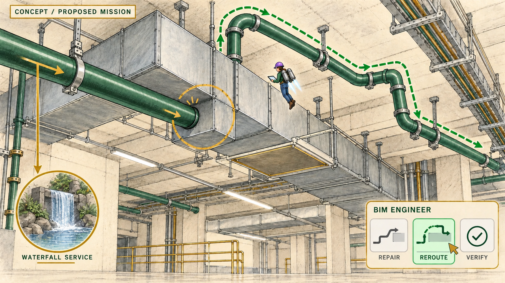
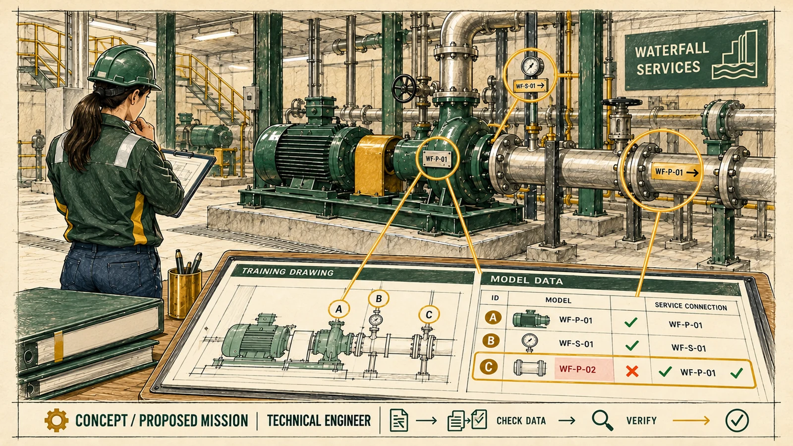
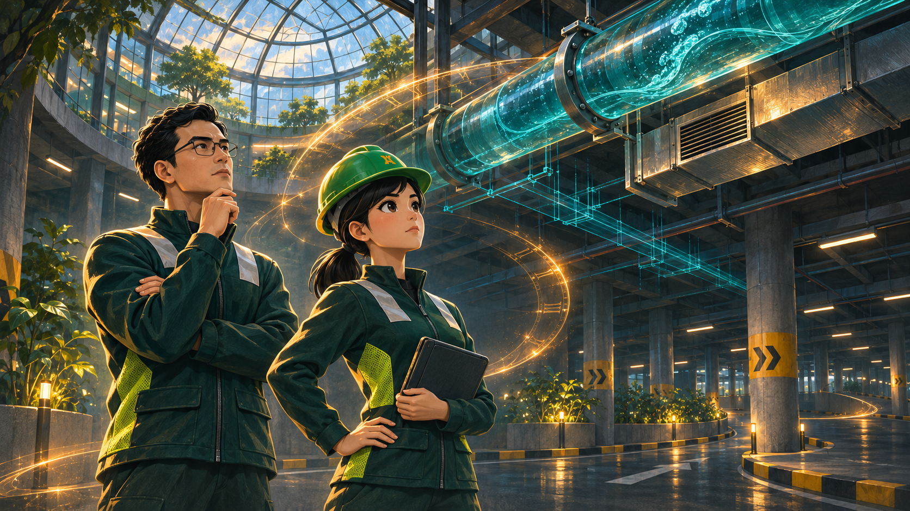

TEAM 01 / SHARED MISSION CONCEPT
BIM Engineer + Technical Engineer
Find five clashes. Design a route. Bring the flow back.
THE SHARED MISSION / The Hidden Clash
Five clashes block a fictional waterfall water pipe.
The pair travel from the Jewel atrium to a planned Revit-designed pump room and service area. The BIM Engineer shrinks and flies above the ceiling to find the clashes. The Technical Engineer follows on foot and designs each new pipe route on a wall screen. Together, they repair the route and test the flow.
These mission ideas and maps are concepts, not proof of the real Jewel’s services or finished game features.
Work together. Each player completes a role-specific part. Share clues, make decisions together and check the result. One piece per player after each clash is a proposed reward, still to be confirmed.


THE HIDDEN CLASH / MISSION CONCEPT
FIND IT. PLAN IT.
FIX IT TOGETHER.
One mission, five clashes and two different ways to help. The 15–20 minute duration is a target for playtesting.

Shrink, fly above the ceiling, find each clash and place the new pipe pieces.
Stay at normal size, follow on foot and use the wall screen to choose pipe sizes, materials and fittings and design the route.
01 / Travel to the past
The pair leave the Jewel atrium and arrive in their mission area with an electrical time-travel effect. A warning says the fictional waterfall water pipe is blocked by clashes.
02 / Find and inspect
The BIM Engineer follows a glowing path, shrinks and flies up to inspect the services. The Technical Engineer follows on foot to an accessible screen nearby. The pair share what they can see.
03 / Design and build
The Technical Engineer checks the supplied fictional drawing and specifications, then arranges pipe and fitting pieces on a Tetris-inspired section-view screen. A transparent preview shows the proposed route. The BIM Engineer places the matching pieces above the ceiling.
Hints are being considered; when and how much of the route to reveal are still to be decided.
04 / Check the flow
Both players run a simulated clearance and water-flow check. A clear message explains a mistake and they can adjust the route and retry. When it passes, the repair lights up and a flow indicator advances. After the fifth clash, they return to the pump-room area for a final simulated test.
Planned fictional setting: the mission environment will be prepared in Revit and later developed for the game. The room, time travel, shared puzzle, pipe placement and flow checks are concepts that still need to be built and tested.
YOUR SHARED MISSION PATH
ONE MISSION.
FIVE CLASHES.
Both players work together on five separate clashes, from easy to difficult. The proposed reward is two pieces per clash, still to be confirmed. Follow the five checkpoints through one continuous challenge. The 15–20 minute duration is a target and needs playtesting. These maps and missions are concepts.
- CHECKPOINT 1First repairA water pipe crosses an air duct. A guided first clash introduces a simple elbow and route.
- CHECKPOINT 2Choose the right pipeA new route needs the correct pipe size and material, plus more than one fitting.
- CHECKPOINT 3Two obstaclesA duct and cable tray both block the water pipe.
- CHECKPOINT 4Keep access clearOne possible route blocks access to equipment.
- CHECKPOINT 5Final connectionA tight service area combines pipe selection, fittings, clearance and access.
Top-down map concept · Select a number or task to explore the mission checkpoint and its jigsaw pieces. The map shows ideas, not saved game progress.
- CHECKPOINT 01PROPOSED REWARD · PIECES 01 + 11 / 50 · ONE EACH
First repair
Issue: A water pipe crosses an air duct. A guided first clash introduces a simple elbow and route.
BIM EngineerShrink, fly to the pipe and show your teammate where the duct blocks it.
Technical EngineerRead the supplied drawing, choose the pipe and elbow, and arrange the route on the screen.
MISSION ROUTE · CONCEPT
Suggested setting: Pump-room service corridor · planned fictional environment
Start: Find the ductIssue: Plan an elbowGoal: Place and test - CHECKPOINT 02PROPOSED REWARD · PIECES 02 + 12 / 50 · ONE EACH
Choose the right pipe
Issue: A new route needs the correct pipe size and material, plus more than one fitting.
BIM EngineerInspect the space above the ceiling and place the agreed pieces.
Technical EngineerCompare the fictional specification with the choices, then design the route with the matching fittings.
MISSION ROUTE · CONCEPT
Suggested setting: Service corridor · planned fictional environment
Start: Check the spaceIssue: Choose pipe and fittingsGoal: Install and test - CHECKPOINT 03PROPOSED REWARD · PIECES 03 + 13 / 50 · ONE EACH
Two obstacles
Issue: A duct and cable tray both block the water pipe.
BIM EngineerFind both obstacles and describe the space between them.
Technical EngineerUse the wall screen to route the chosen pipe and fittings around both obstacles.
MISSION ROUTE · CONCEPT
Suggested setting: Overhead service crossing · planned fictional environment
Start: Find both obstaclesIssue: Design a clear routeGoal: Build and test - CHECKPOINT 04PROPOSED REWARD · PIECES 04 + 14 / 50 · ONE EACH
Keep access clear
Issue: One possible route blocks access to equipment.
BIM EngineerSpot the access point above the ceiling and tell your teammate which route blocks it.
Technical EngineerRevise the section-view route to keep the equipment accessible.
MISSION ROUTE · CONCEPT
Suggested setting: Equipment access area · planned fictional environment
Start: Inspect accessIssue: Revise the routeGoal: Check clearance - CHECKPOINT 05PROPOSED REWARD · PIECES 05 + 15 / 50 · ONE EACH
Final connection
Issue: A tight service area combines pipe selection, fittings, clearance and access.
BIM EngineerInspect the tight space and install the agreed pieces in their positions.
Technical EngineerUse the drawing and your teammate’s clues to complete the final route on the screen.
MISSION ROUTE · CONCEPT
Suggested setting: Pump-room connection · planned fictional environment
Start: Share final cluesIssue: Complete the routeGoal: Test the flow
POSSIBLE TEAM REWARD
A possible reward is ten pieces for the pair, to bring back to the Director. This reward is still to be confirmed.
Explore the 50-piece jigsaw ↗